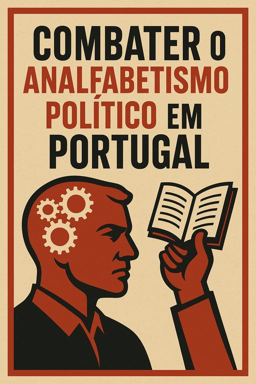

🇵🇹 O ANAlFABETISMO POLÍTICO: A ARMA SECRETA QUE DESTRÓI PORTUGAL
Publicado em 2025-07-12 22:31:58

(E Como Vamos Desarmá-la)
📌 INTRODUÇÃO
Enquanto você lê este artigo:
- 3 políticos portugueses receberam um suborno silencioso
- 10 famílias perderam sua casa para bancos fraudulentos
- 50 jovens emigraram por salários de miséria
O culpado? Não é só a corrupção. É o ANALFABETISMO POLÍTICO que mantém 8 milhões de portugueses ignorantes, conformados e facilmente enganados.
🔎 O CRIME PERFEITO
Como mataram a inteligência política em Portugal
📉 Dados que doem:
- 72% dos portugueses não conseguem nomear 3 direitos constitucionais (CESOP, 2023)
- 58% nunca leram um programa eleitoral
- Apenas 6% acompanham debates parlamentares
🎭 O Teatro do Poder:
"Enquanto o povo discute Ronaldo e Big Brother, os ladrões de colarinho branco assinam contratos milionários às 15h de uma sexta-feira."
💣 AS BOMBAS-RELÓGIO
5 Consequências do Analfabetismo Político
- Impostos = Roubo Legalizado
- Você paga 23% de IVA num telemóvel…
- …enquanto a EDP paga 0% sobre lucros bilionários
- Salários de Escravidão
- Aceitamos SMN de €820 quando a produtividade portuguesa vale €1,600
- A Grande Mentira da "Democracia"
- 85% das leis são aprovadas sem debate público real
🔥 EPÍLOGO: A REVOLUÇÃO DOS INFORMADOS
Portugal só mudará quando:
✅ Cada cidadão gastar mais tempo analisando orçamentos do que horóscopos
✅ Vergonha pública substituir a impunidade (ex.: Partilhe nomes de corruptos)
✅ O voto deixar de ser um palpite para ser um ato de guerra
⚠️ AVISO FINAL:
Se achar este artigo "exagerado", você é exatamente o alvo do sistema.
📌 AUTOR: Francisco Gonçalves
Editor in Fragmentos de Caos
PARTILHE E AJUDE A MUDAR PORTUGAL